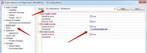
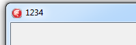
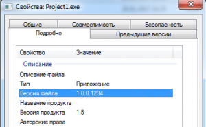

Номер ревизии SVN в проекте Delphi
В этой инструкции показано как настроить автоматическое добавлении номера ревизии в Delphi программу из рабочей копии SVN в которой находится собираемый проект. Номер ревизия отображается в свойствах файла, а из кода доступен в виде константы.
Устанавливаем консольный клиент SVNopen in new window.
Создаем и сохраняем в Delphi новый проект.
Рядом с файлом проекта помещаем два файла: version.rc.tmpl - шаблон для файла ресурсов и скрипт получения ревизии _CreateInclude.bat.
1 VERSIONINFO FILEVERSION 1,0,0,---WCREV--- PRODUCTVERSION 1,5 FILEOS 0x4 FILETYPE 0x1 FILESUBTYPE 0x0L FILEFLAGSMASK 0x3fL { BLOCK "StringFileInfo" { BLOCK "040904E4" { VALUE "CompanyName", "\0" VALUE "FileDescription", "\0" VALUE "FileVersion", "1.0.0.---WCREV---\0" VALUE "InternalName", "\0" VALUE "LegalCopyright", "\0" VALUE "LegalTrademarks", "\0" VALUE "OriginalFilename", "\0" VALUE "ProductName", "\0" VALUE "ProductVersion", "1.5\0" VALUE "Author", "\0" } } BLOCK "VarFileInfo" { VALUE "Translation", 0x0419 0x04E4 } }
cd %~dp0
del _IncludeBuildInfo.inc
chcp 1251
rem Get revision
svn info | find /i "Last Changed Rev">__rev.txt
SET /p rev=<__rev.txt SET rev=%rev:~18%
del __rev.txt
rem create include
del _IncludeBuildInfo.inc
echo const cRevision = '---WCREV---'; cBuildInfo = 'BuildDate: "%DATE% %TIME%"; User: "%USERNAME%"; COMPUTERNAME: "%COMPUTERNAME%"';>> _IncludeBuildInfo.inc
reFind.exe _IncludeBuildInfo.inc "/P:---WCREV---" "/R:%rev%" /B:2
rem create res
del version.rc
copy version.rc.tmpl version.rc
reFind.exe version.rc "/P:---WCREV---" "/R:%rev%" /B:2
BRCC32.exe -w32 -v -c1251 -m "%~dp0version.rc" -foversion
reFind.exeopen in new window - утилита из набора Delphi.
При запуске _CreateInclude.bat создаются два файла version.RES и _IncludeBuildInfo.inc.
const cRevision = '1234'; cBuildInfo = 'BuildDate: "20.01.2017 16:21:06,51"; User: "QQQ"; COMPUTERNAME: "QQQ1"';
Подключаем их в коде приложения
var Form1: TForm1;
// подключение ресурса для вывода номера ревизии в свойствах файла {$R version.RES}
// подключение файла с константой в которой номер ревизии {$I '_IncludeBuildInfo.inc'}
implementation
{$R *.dfm}
procedure TForm1.FormCreate(Sender: TObject); begin // используем константу из _IncludeBuildInfo.inc Caption := cRevision; end;
В настройке проекта, для All configurations, добавляем запуск _CreateInclude.bat перед сборкой

Компилируем проект, ревизия отображается в свойствах файла и в заголовке формы.

